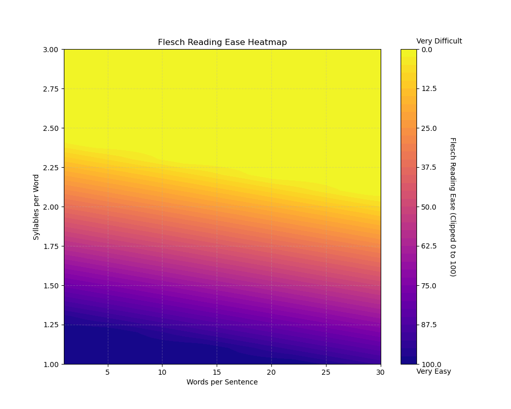
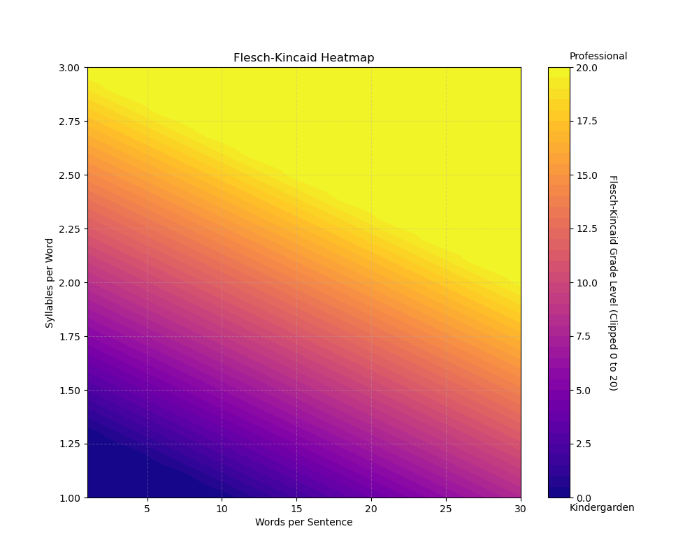
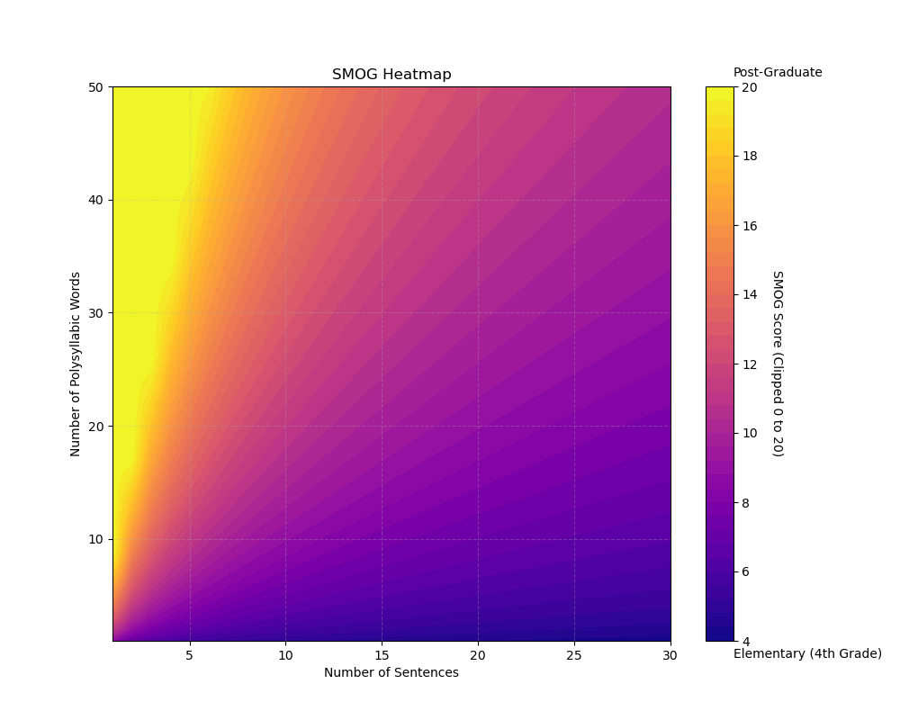
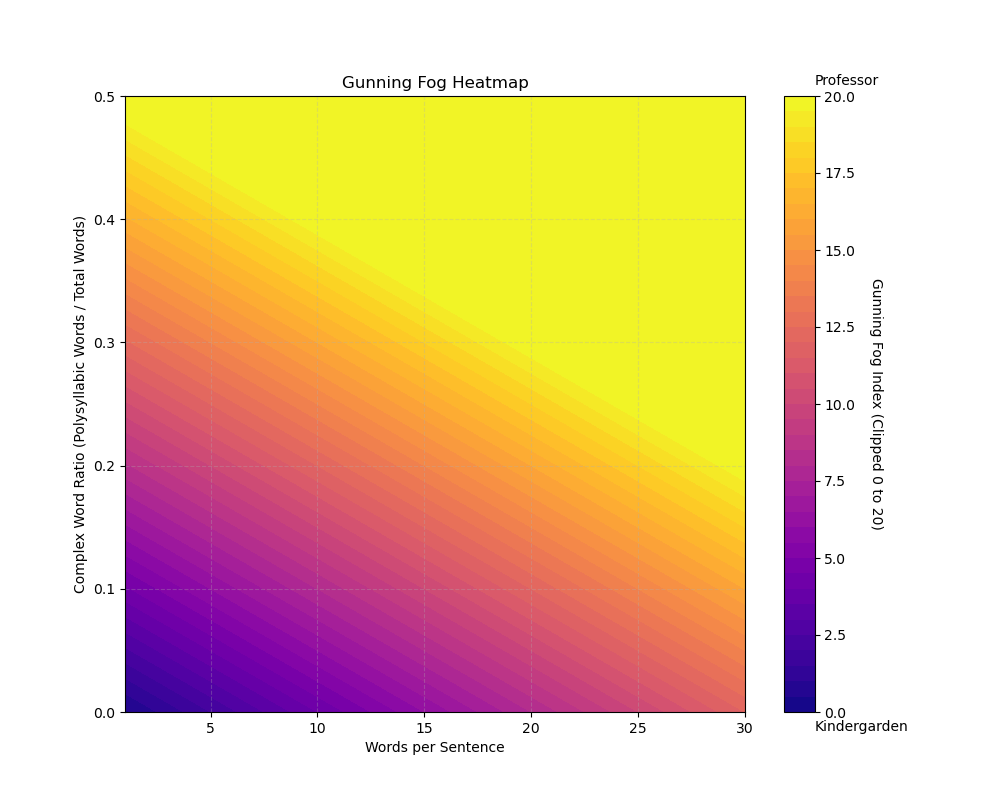
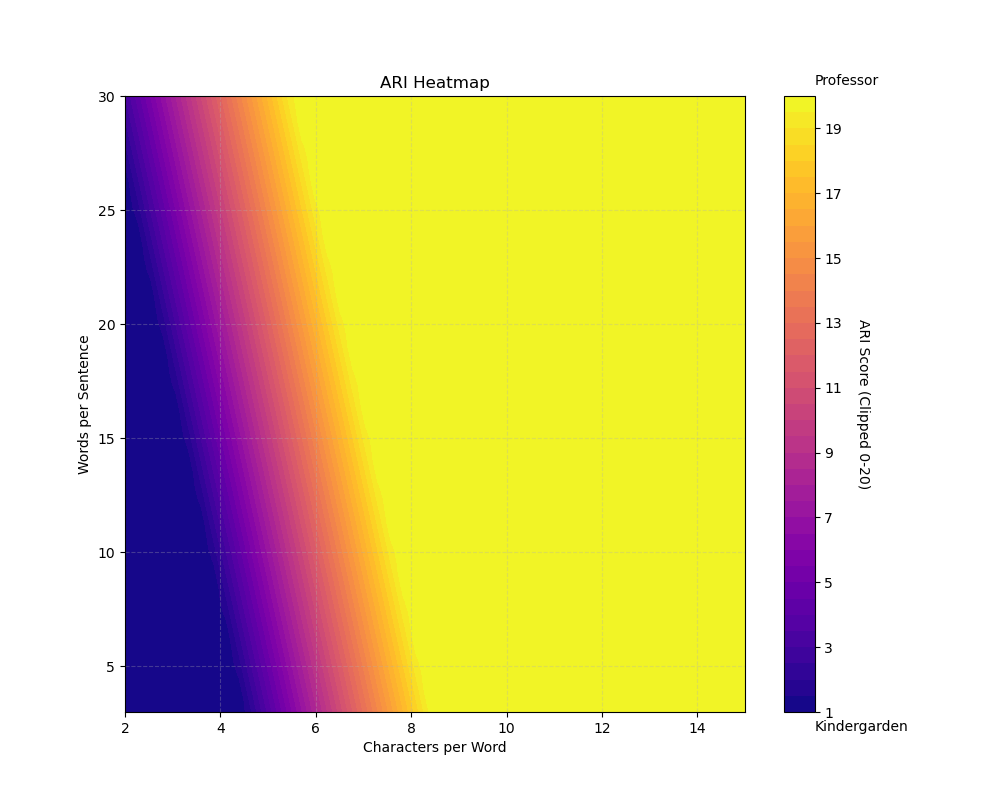
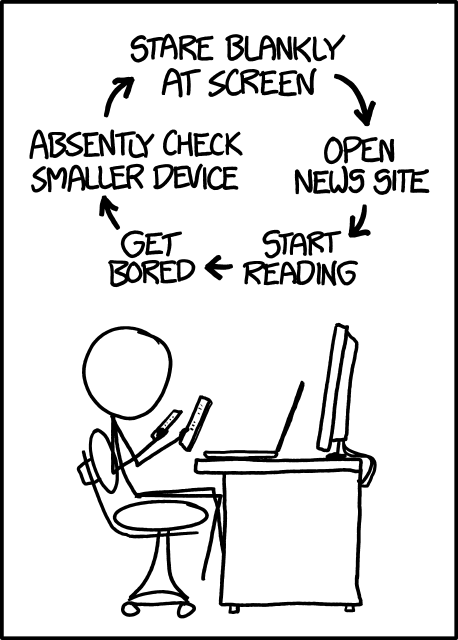

![]()
{kind=link}
{kind=link}
01:00
Discerning the Message
Classifying the Clarity of Communication with Readability in R
Wednesday, the 27th of November, 2024
Overview
- Define readability
- Discuss readability in scientific communication
- Demonstrate practical applications of readability
Define readability

Dancer Girl reading on Desk?
Readability is an important hidden part of our world
Define readability
What is readability?
Define readability - Quick Write
In one sentence,
what is readability to you?
Readabilty – Qualitative ease of reading written material
Define readability - Verbally
Readability noun
the state or quality of being readable.
the properties that affect the sustainability of reading material (typography)
Readable adjective
- able to be read easily
- a: legible (can be read)
- b: interesting (worth being read)
- c: suitable (fit to be read)
What is important about readability?
Discuss readability in scientific communication
Why is readability important in Science Communication?
Readability – Quantitatively defined by many metrics!
Define readability - Statistically
| Scale | Description | Score_Range | Interpretation | Formula |
|---|---|---|---|---|
| Flesch Reading Ease | Measures readability ease. | 0-100 | 70-100: Easy, 60-70: Standard (8-9th grade), 0-60: Difficult. | \(206.835 - (1.015 \times \text{total words/total sentences}) - (84.6 \times \text{total syllables/total words})\) |
| Flesch-Kincaid Grade Level | Adjusts the Flesch formula to reflect U.S. grade levels. | 0-12+ | Score corresponds to the grade level (8.0 = 8th grade). | \((0.39 \times \text{ASL}) + (11.8 \times \text{ASW}) - 15.59\) |
| SMOG Index | Estimates reading grade level based on complexity. | 0-20+ | \(1.0430 \times \sqrt{30 \times \text{number of polysyllabic words}} + 3.1291\) | |
| Gunning Fog Index | Estimates reading grade level based on complexity. | 5-20+ | Score corresponds to the grade level (8.0 = 8th grade). | \(0.4 \times [(\text{ASL}) + (\text{percentage of complex words})]\) |
| Automated Readability Index | Uses word and sentence character counts to estimate the U.S. grade level | 1-14+ | \((4.71 \times \text{characters/words}) + (0.5 \times \text{words/sentences}) - 21.43\) | |
| Coleman-Liau Index | Uses document and sentence length for estimating reading level. | 1-14+ | Score corresponds to the grade level (8.0 = 8th grade). | \((0.0588 \times L) - (0.296 \times S) - 15.8\) |
Plotting the metrics displays their scope
Define readability - Statistically





 {
// Get the content of outputText
let existingOutput = document.getElementById("outputText").innerHTML;
// Get the current value of userInput2
let userInput2 = document.getElementById("userInput2").value;
let words = userInput2.split("-");
// Create a list from userInput2
let newOutput = "";
words.forEach(word => {
newOutput += `<li>${word}</li>`;
});
// Combine existing outputText content with userInput2 output
document.getElementById("outputText2").innerHTML = `<ul>${existingOutput}${newOutput}</ul>`;
}
// Update outputText2 whenever userInput changes
document.getElementById("userInput").addEventListener("input", function () {
let userInput = this.value;
let words = userInput.split("-");
let output = "";
words.forEach(word => {
output += `<li>${word}</li>`;
});
// Update outputText
document.getElementById("outputText").innerHTML = `<ul>${output}</ul>`;
// Update outputText2 immediately
updateOutputText2();
});
Am I improving the documentation?
Discuss readability in scientific communication
MCB 180L contains material not suited for its student audience. Readability allowed a quantifiable solution.
| Document | avg_Flesch | avg_Flesch.Kincaid | avg_FOG | avg_SMOG | avg_ARI | avg_Coleman.Liau.grade | Overall_avg |
|---|---|---|---|---|---|---|---|
| Lab’s handout | 40 | 13 | 17 | 15 | 12 | 11 | 14 |
| Lab’s PCR page | 32 | 15 | 19 | 17 | 14 | 11 | 15 |
| My revised PCR page | 51 | 11 | 14 | 13 | 11 | 10 | 12 |
{kind=link}
{kind=link}
Demonstrate practical applications of readability
The Loop!!! xkcd
DMV metrics are acutally targeted to their audience?
Demonstrate practical applications of readability
Clean up our new R object
Demonstrate practical applications of readability
dmv_handbook_cleaned <- sapply(dmv_handbook, function(x) {
lines <- unlist(strsplit(x, "\n"))
lines <- trimws(lines)
lines <- lines[lines != ""]
paste(lines, collapse = "\n")
})
glimpse(dmv_handbook_cleaned) Named chr [1:92] "English\nCALIFORNIA\nDRIVER’S HANDBOOK\nThis handbook is available at Gavin Newsom, Governor\ndmv.ca.gov "| __truncated__ ...
- attr(*, "names")= chr [1:92] " English\n\n\n\n\n CALIFORNIA\n DRIVER’"| __truncated__ "We know your time is\n valuable\n\n • Renew driver’s license\n and vehicle registrat"| __truncated__ "Dear fellow Californian,\nWhether traveling by car, transit, bike, scooter,\nskateboard or on foot, we all want"| __truncated__ "Copyright\n© Copyright, Department of Motor Vehicles 2024\nAll rights reserved.\nThis work is protected by U.S."| __truncated__ ...dmv_handbook_df <- textstat_readability(dmv_handbook_cleaned, measure = c("Flesch", "Flesch.Kincaid", "FOG", "SMOG", "ARI", "Coleman.Liau.grade"))
dmv_sliced_df <- dmv_handbook_df %>%
slice(-(1:6)) %>% # remove the title pages, author list, and table of contents
slice(-(85:86)) # remove the extra stuff after the glossary
dmv_averages <- dmv_sliced_df %>%
summarise(across(c("Flesch", "Flesch.Kincaid", "FOG", "SMOG", "ARI", "Coleman.Liau.grade"), mean, .names = "avg_{.col}"))
# View result
print(dmv_averages) avg_Flesch avg_Flesch.Kincaid avg_FOG avg_SMOG avg_ARI
1 64.01066 8.008079 11.13978 10.90309 7.772567
avg_Coleman.Liau.grade
1 9.199139| avg_Flesch | avg_Flesch.Kincaid | avg_FOG | avg_SMOG | avg_ARI | avg_Coleman.Liau.grade |
|---|---|---|---|---|---|
| 64.01066 | 8.008079 | 11.13978 | 10.90309 | 7.772567 | 9.199139 |
Excessively practical demo
Demonstrate practical applications of readability
-
- review
?convert2dfinRfor filetype
- review
Acknowledgments
You
Supp
Readability – Quantitatively defined by many metrics!
Define readability - Statistically
- Flesch Reading Ease + Flesch-Kincaid Grade Level:
- Word syllables and Sentence length (\(\frac{words}{sentence}\))
- SMOG + Gunning Fog:
- Complex vocabulary and sentence count
- Complex vocabulary and sentence length
- ARI + Coleman-Liau Index:
- lengths of words (by characters) and sentences length
- character count of words and sentence